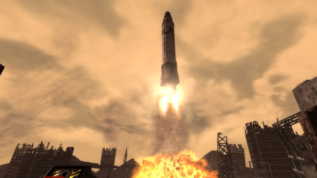
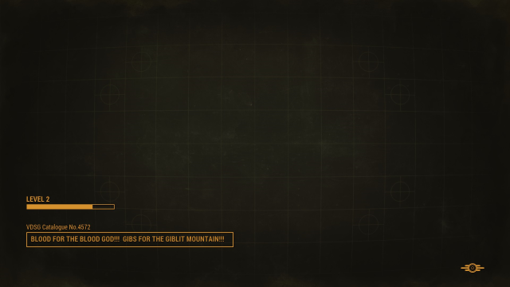

The Fallout franchise began with two isometric, turn-based role-playing games called Fallout (1997) and Fallout 2 (1998). These games were developed by Black Isle Studios beginning in 1997 for the personal home computer, supporting both the Windows and Macintosh OS’. These two games lay the groundwork for a highly popular series that is beloved by many video game enthusiasts and has led to an increase in younger generations appreciating 40s and 50s music and aesthetic in a way they would not previously be exposed to.
In 2008, Bethesda Game Studios acquired the intellectual rights to the Fallout franchise and produced Fallout 3 that same year and later Fallout 4 in 2015. Bethesda continues to hold the rights to the franchise to this day. The Bethesda brand of Fallout games are drastically different from Black Isle’s in that they traded the two-dimensional, top-down style for a three-dimensional, first person shooter that relies heavily on gun play and real time combat. Many in the Fallout community that are fans of the original games find this cheapens the experience as it is too fast paced and does not allow for true appreciation of the game.
Throughout the game’s history, other publishers have taken on the mantle of the game to create their own spin-offs, such as Micro Forté’s Fallout Tactics (2001), Interplay’s Brotherhood of Steel (2004), Obsidian’s New Vegas (2010), and Bethesda’s 76 (2018). Fallout: New Vegas and Fallout 76 are considered canon, or apart of the larger lore of the series, while Tactics and Brotherhood of Steel are considered completely stand alone and non-canon.
The Fallout games coexist with two primary aesthetics, the “old world,” or before the dropping of massive nuclear bombs in a power struggle between the democratic United States and Communist power-house China, and the “new world,” a post-apocalyptic wasteland that begins 84 years after the dropping of the bombs (Fallout 1).
The lore of the games is unique in that they do not precisely follow the history of our own world but diverges into an alternate universe approximately after World War II. Instead of the United States engaging in a Cold War with the Soviet Union, Russia is largely powerless, and it is Communist China that rises to power and is a major threat to the United States. America annexes both Mexico and Canada during a major resource crisis as countries turn to nuclear power to keep their cars running and lights on. Vault-Tec, a company funded by the America government, creates underground vaults to house American civilians in the event of a nuclear war. In the autumn of 2077, a global nuclear war begins, and many countries are devastated in the attack, most notably China and America. This leads us to the first Fallout game.
Despite history continuing until 2077, prior to the dropping of nuclear bombs, Fallout is locked in the aesthetics of post-World War II, or everything matches up with the mid 1940s and 50s. Women are mostly homemakers and the draft still exists. People live in idyllic pastel homes with white picket fences. The television is in black and white and the Ink Spots are on the radio. However, it diverges drastically from our own mid-century lifestyle in that technology has rapidly grown. Robot butlers called Mister Handy’s float around the house and help with daily chores. Cars run on nuclear fission. They have created a wrist-held, personal computer called a Pip-Boy that monitors your vitals in real time. Heavily armored battle copters called Vertibirds, armed with miniguns, are flown into warzones to drop troops. It is a bizarre conglomerate of mid-century naiveness and ultra-futuristic technology.
In the wake of the nuclear devastation, there are few survivors in America. Some band together to create what little civilization they can eek out from the rubble. Food is in a massive shortage and the water is heavily irradiated. Some turn to pillaging these settlements and murdering those that travel alone, these are called raiders. Even 200 years later (Fallout 4), the world is still filled with background radiation, the rubble of destroyed cities and people barely getting by. The ones that are truly safest are those that made it to the underground vaults, but as many learned, there was more to them then meets the eye.
Vault-Tec was a pre-war corporation that was funded by the United States government to create underground fallout shelters called vaults in the event of a nuclear holocaust. Some were what they said on the tin, a safe place to wait out the nuclear devastation until it was safe to reemerge and reclaim the United States. However, Vault-Tec was also a nefarious company with its own agenda. It converted many vaults across the country into secret experiments that trapped its inhabitants in hellish conditions to test the human psyche and push physical limitations. Some experimented in cloning (Vault 108), one had a faulty vault door that let radiation leak in (Vault 12), and one put its inhabitants in cryogenic stasis (Vault 111). These experiments were conducted across the country and monitored by Vault-Tec employees until they inevitably perished from old age or ended their own lives.
